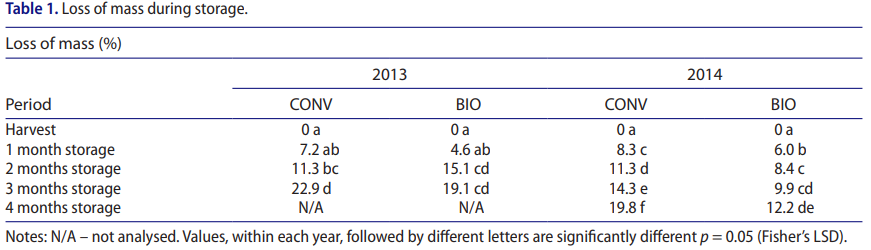

Introducció als articles
He trobat diversos articles científics que estudien aquest tema i els trobareu a continuació en format APA7. És una manera d’escriure i citar articles científics de forma estandarditzada.
- Article de la University of Agronomic Sciences and Veterinary Medicine of Bucharest (Romania), publicat el 2022 a la revista Scientific Papers Series Management, Economic Engineering in Agriculture and Rural Development.
- En el format APA7, primer s’escriuen els cognoms dels autors seguits de les inicials, després l’any entre parèntesis i, finalment, el títol i la revista.

En el moment de proporcionar-li el document a ChatGPT, deia constantment que no tenia accés al fitxer. Per això, no vaig poder obtenir-ne l’anàlisi del contingut.